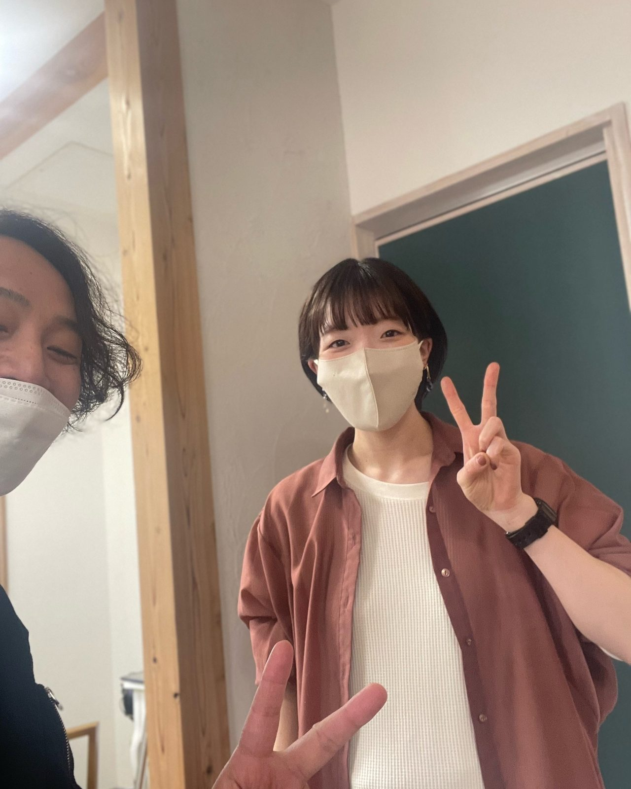

ナイン２人目のおめでたい。
おはようございます😃
アトリエナインの菅野です。
今のアトリエナインの会社のコンセプトの一つ
•スタッフの生涯現役で働けるサロン
があります。
【スタッフに最高の労働環境を】
の目標を掲げて、約2年。
着々と労働環境整備が整ってきているのを実感。
もちろんスタッフにも実感してもらっており、嬉しい言葉もスタッフから言ってもらえているので、とても嬉しい気持ちになります。
そんな労働環境整備の甲斐もあり、続々と産休、育休に入るスタッフが出てきております。
そして、2人目となる産休に入るスタッフが、
岡部店スタイリストの本田。

彼女も、前の会社では、なかなかスタイリストに上がれなくてウチの会社に入ってくれたスタッフ。
半年でスタイリストになってくれて、かれこれ入社2年。
もともと入社してくれた時も、結婚したてで、子供もゆくゆく欲しいと相談されておりました。
そんな本田には、僕から「先ずスタイリストになろう」と話をしました。
本田をしっかりとしたスタイリストにならせてあげて、美容師のスタートラインに立たせてあげたいと思い、応援する事を決意して入社してもらいました。
本田の人生設計も考えるとスタイリストになって経験を積ませ、お客様を付けてあげることが急務と感じ、半年でスタイリストまで育成。
そして今年ようやく80万プレーヤーまで成長。
本人も大変だったと思うけど、ホント頑張り屋さんで努力を惜しまないところが、結果に現れた感じですね!
余談ですが、
ウチのスタッフは、結構前の会社で待遇や労働環境に恵まれなかったスタッフが多いです。
実際アトリエナインも、開業当初は労働環境が出来上がっていなかったので、離職したスタッフもおりました。
徐々に労働環境を改善。
今では社労士さんと就労規則も去年作成。
労働基準監督署にも就労規則を提出済み。
ウソの無い雇用契約を実現しております。（実はこの求人サイトで書いてある事以上にやりやすくなってる事もあります。）
今年から給与ベースも底上げ。
まだまだ労働環境改善案はいっぱいあります。
でも先ずは着実に、しっかりと。今のスタッフに合わせた働きやすい環境。
コレをもっとうに全力経営しております。
コレから、３人目、４人目と産休、育休が出てくるとは思いますが、会社でしっかりサポートしますよぉ〜。そして復帰しても変わらず、むしろもっと働きやすい環境改善しますよぉ〜。
それではまた。
株式会社 アトリエ・ナイン 代表 菅野
2015年9月、福島県福島市に《hair atelier nine》をオープン。
福島市で髪質改善、ヘッドスパサロンを展開しており、２０１９年１０月には待望の２店舗目をオープン。
年内に3店舗目を検討中。
オープンしてから３年目に法人化。オープン７年目に突入。サロンの労働環境改善のため社員の週休２日を実現。サロンワーク８時間で残業なし。スタッフに働きやす環境整備をもっとうに経営を心がけております。
福島市の美容室の求人をお探しの美容師さんぜひお話だけでもいかがでしょうか？？
求人に少しでも興味のある方はお気軽にお問い合わせください。
サロン見学や求人の概要の問合せ、相談など、なんでもお待ちしております。
LINE：@jnp9523c
までお問い合わせください